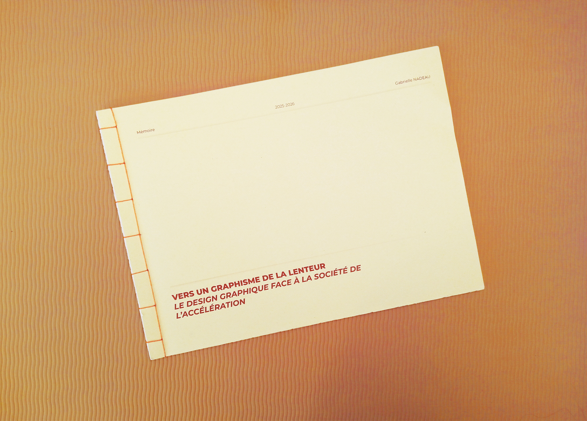
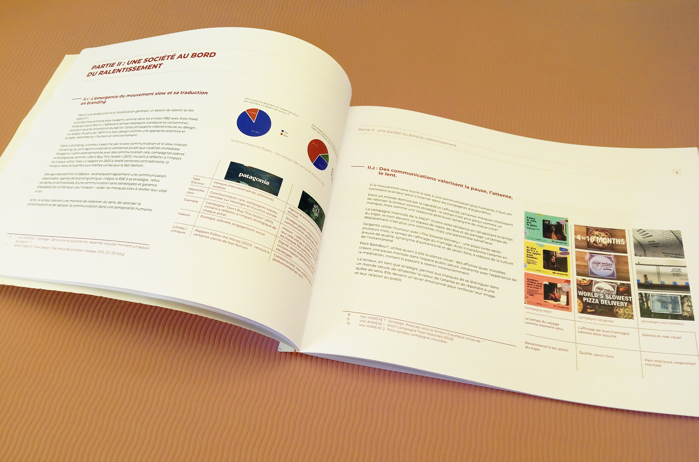
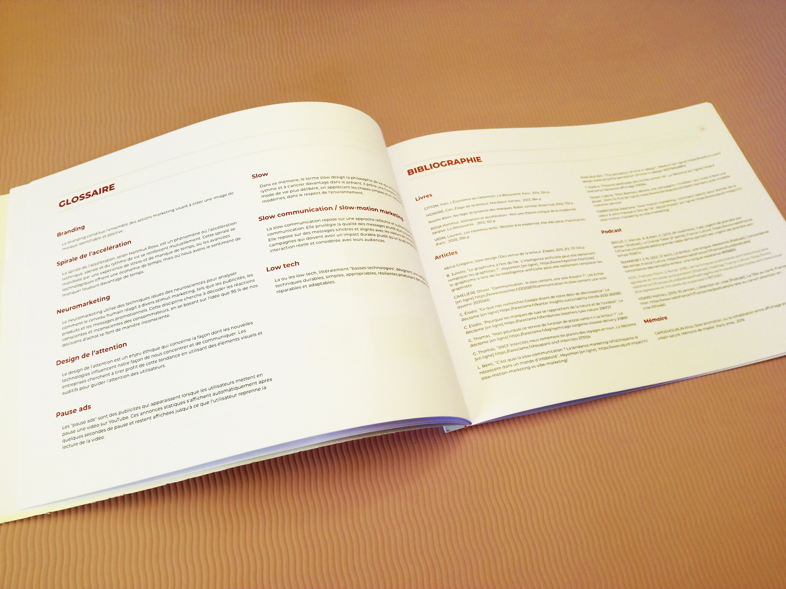
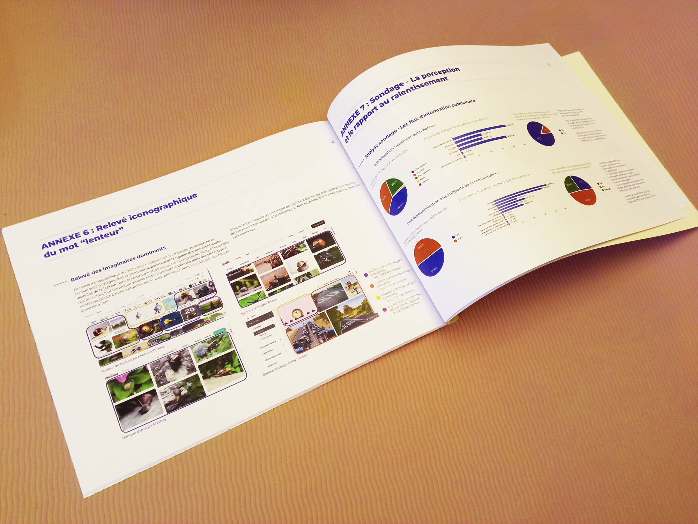
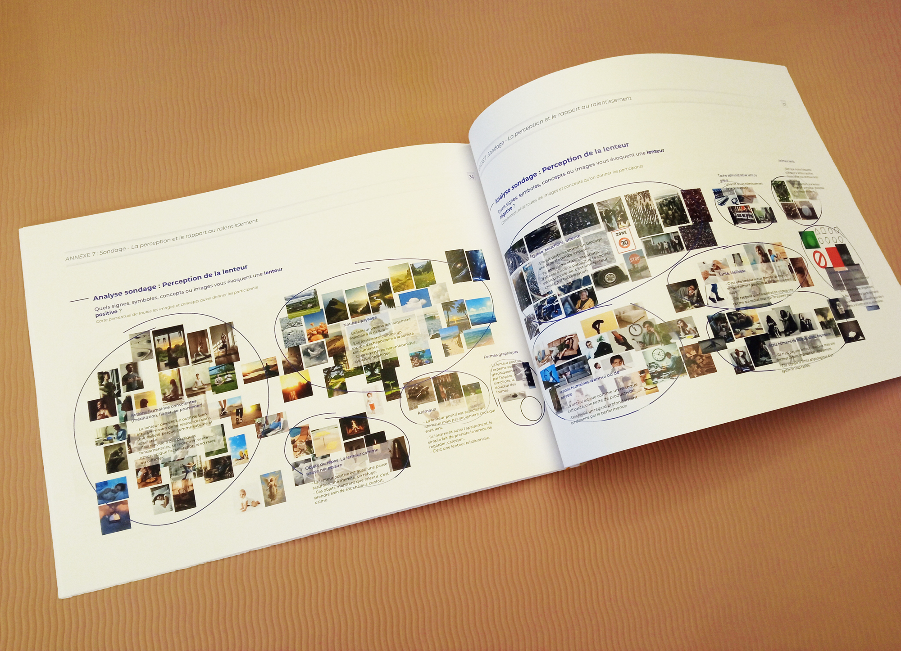

Dans une société dominée par l’accélération et la performance, comment le design graphique peut-il représenter et valoriser la lenteur au sein des stratégies de branding, sans céder aux stéréotypes visuels ou récupération marketing qui en compromettent la portée critique ?
Le branding contemporain érige la vitesse en valeur marchande : symbole d’immédiateté et de progrès, elle supprime temps et distance pour devenir gage d’efficacité. L’accélération technique et technologique transforme la communication ; l’espace public, saturé d’images industrialisées et standardisées notamment avec l’IA, s’uniformise et perd sa sensibilité.
En réponse, les mouvements « slow » apparaissent comme une alternative : ils réintroduisent la contemplation, redonnent du sens et replacent la communication dans un rythme humain. Certaines campagnes utilisent la lenteur comme facteur de différenciation et d'autres comme un espace pour respirer et réfléchir.
Bien que les codes visuels du « slow » restent souvent stéréotypés ou détournés par le « slow washing », des pratiques artisanales et expérimentales montrent que la lenteur peut devenir une posture esthétique valorisant la matérialité, la patience et la contemplation, jusqu’à former un véritable langage graphique.




